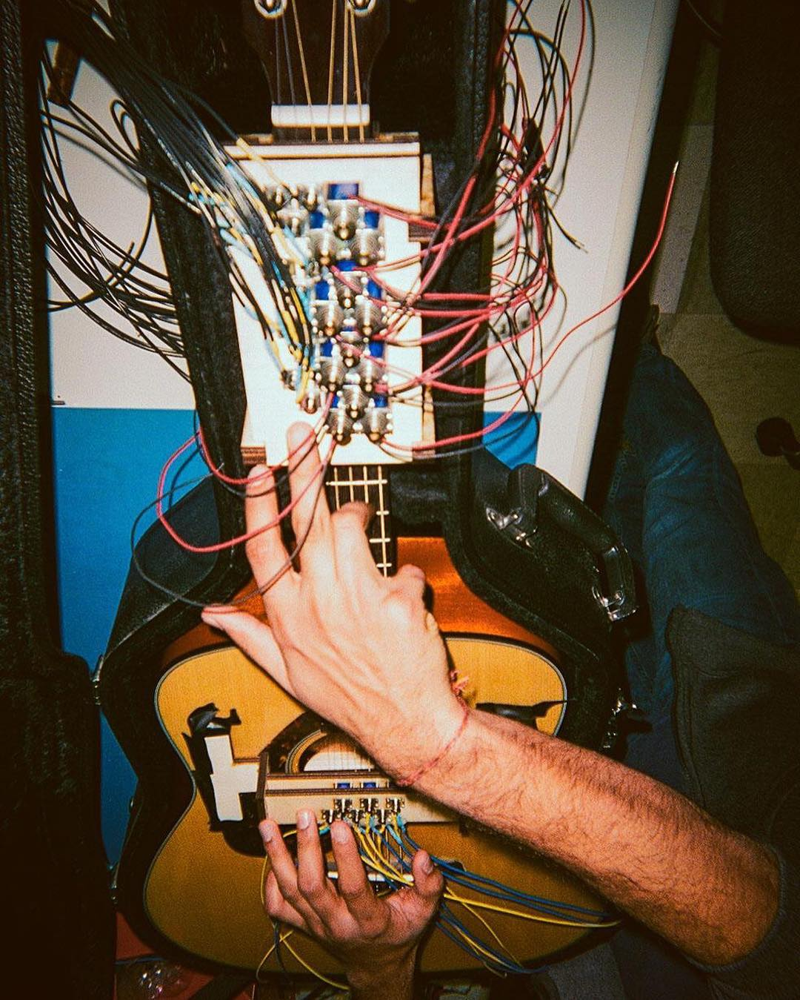

|
 We hacked a voice-controlled self-playing guitar during dead week 2016, between consecutive all-nighters and trips to OB Chicken. The system's controlled by a pyton program running on a Raspberry Pi. The strings and frets are strummed and pressed by arrays of solenoids carefully held over the neck and sound hole of the guitar. We noted that notes from frets further down the neck tend to be out of tune, but that didn't stop Taylor Swift at the 2010 Grammys, so hey. You can check out the source on github. |